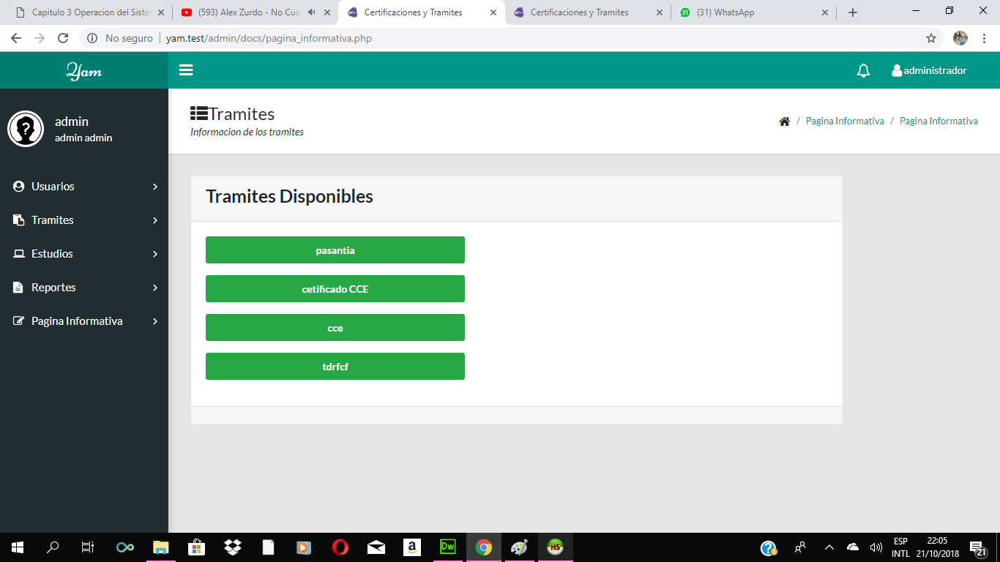

Tanto como se puede crear la carrera tambien se puede listar las carreras que ya estan creadas.
En la lista que le aparece tambien hay la opcion de crear que le lleva al mismo lugar de crear la carrera.
Esta area permite crear cursos externos que se dan en la Institucion Infocal.
Tanto como se puede crear los cursos externo tambien se puede listar los cursos externos que ya estan creadas.
En la lista que le aparece tambien hay la opcion de crear que le lleva al mismo lugar de crear el curso externo.
Para iniciar un curso se debe elegir el curso y la persona que va a tomar el curso.
Se debe elegir el Curso externo que va a tomar.La caja de texto tiene su propio buscador para poder seleccionar el curso.
Se debe elegir el Estudiante que va a tomar el curso.La caja de texto tiene su propio buscador para poder seleccionar al estudiante.
Esta opcion es para ver a los estudiantes que estan tomando un curso externo.
Esta seccion es para crear distintos tipos de usuario.
Registrar todos los tipos de usuario para poder ingresar al sistema.
En la siguiente imagen se ve como se puede registrar una persona que tenga el rol de un administrador.
Al registrar el personal cuando eliga en el campo de rol personal le aparecera un nuevo campo donde pueda elegir el cargo que tiene esa persona.
Despues de registrar a las personas tambien se puede listar todas las personas registradas.
Se puede modificar los datos de la persona registrada y tambien eliminarla.
Esta seccion de tramites es para poder iniciar un tramite para la persona que realice un tramite.
Es la parte para poder crear un requisito para los tramites y poder iniciar un tramite.
”Es la parte para poder crear un pasos para los tramites y poder iniciar un tramite.
Despues de crear los requisitos necesarios que requiera el tramite tambien se puede listar todos los requisitos que ya estan creadas.
Despues de crear los pasos necesarios que requiera el tramite tambien se puede listar todos los pasos que ya estan creadas.
Al crear un tramite se añade los requisitos y pasos que tiene cada tramite.

3.1.1.1.3.6 Modificar Tramite
Esta opcion sirve para poder modificar el tramite ya creado.
Esta seccion es para poder iniciar un tramite.
En la caja de seleccion se encuentran todos los tramites creados en Crear Tramite y seleccione el tramite que la persona quiera realizar para poder iniciar su tramite.
En la caja de seleccion se encuentran todos los estudiantes creados en Registrar Estudiante y seleccione al estudiante que quiera realizar un tramite.
Para actualizar el tramite y pueda pasar a la siguiente etapa tiene que elegir el Estudiante que quiera actualizar el estado.
En la siguiente imagen le aparecen los tramites que estan en curso de la persona a realizar el tramite.
Para actualizar el tramite puede elegir el estado donde esta el tramite y acrtualizarlo.
Este es el mensaje que le llegara al cliente que realizo un tramite cuando el tramite este en despacho listo para recojer.
Este es el mensaje que le llegara al cliente cuando el tramite excedio el tiempo de espera en despachos.
Esta seccion es para imprimir la cuenta despues de iniciar un tramite solo para el estudiante es donde se entregara la cuenta para ingresar al sistema.
La seccion de los reportes es para poder ver en general todo lo manejado en el sistema
Los siguientes tipos de reportes son:
Reporte de tramites por tipo de trámite y fecha ingreso

La pagina informativa sirve para las personas que quieran realizar un tramite y quieran saber los requisitos y pasos a realizar.
Es la parte donde se encuentran todos los tramites disponibles y la persona pueda visualizarlo.
Al ingresar a cualquier tramite le mostrara los requisitos y pasos que requiere el tramite para ser realizado.
El personal es el que puede manejar el sistema pero con partes del menu que solo necesite el personal para poder iniciar un tramite.
El menu principal del personal no tiene lo mismo que tiene el administrador solo tiene lo necesario para que el pueda utilizar el sistema.
Esta seccion es para crear distintos tipos de usuario.
Registrar todos los tipos de usuario para poder ingresar al sistema.
En la siguiente imagen se ve como se puede registrar una persona que tenga el rol de un administrador.
Al registrar el personal cuando eliga en el campo de rol personal le aparecera un nuevo campo donde pueda elegir el cargo que tiene esa persona.
Al registrar a una persona con el rol de estudiante aparece un nuevo campo donde pueda elegir la carrera.

Para crear la cuenta de los distintos roles que existen son de la misma manera como muestra en la imagen. La contraseña se llenara aleatoriamente.
Despues de registrar a las personas tambien se puede listar todas las personas registradas. Se puede modificar los datos de la persona registrada y tambien eliminarla.
La seccion del tramite no es lo mismo del administrador por que el personal solo estan los campos requeridos.
Esta seccion es para poder iniciar un tramite.
En la caja de seleccion se encuentran todos los tramites creados y seleccione el tramite que la persona quiera realizar para poder iniciar su tramite.
En la caja de seleccion se encuentran todos los estudiantes creados en Registrar Estudiante y seleccione al estudiante que quiera realizar un tramite.
Para actualizar el tramite y pueda pasar a la siguiente etapa tiene que elegir el Estudiante que quiera actualizar el estado.
En la siguiente imagen le aparecen los tramites que estan en curso de la persona a realizar el tramite.
Para actualizar el tramite puede elegir el estado donde esta el tramite y actualizarlo.
La seccion de los reportes es para poder ver en general todo lo manejado en el sistema
Los siguientes tipos de reportes son:
Primera opcion:
Reporte de tramites por tipo de trámite y fecha ingreso
Segunda opcion:
Reporte de tramites por estudiante
Tercera opcion:
Reporte de tramites por fecha de ingreso y hora ingreso
Cuarta opcion:
Reporte de tramites por personal
Quinta opcion:
Reporte por estado
La pagina informativa sirve para las personas que quieran realizar un tramite y quieran saber los requisitos y pasos a realizar.
Es la parte donde se encuentran todos los tramites disponibles y la persona pueda visualizarlo.
Al ingresar a cualquier tramite le mostrara los requisitos y pasos que requiere el tramite para ser realizado.
El menu del estudiante solo se encuentra dividido en tramite y la pagina informativa.
Esta seccion es para poder ver los tramites que estan en curso y poder ver el estado de su tramite.
Seleccione el tramite para ver donde se encuentra su tramite.
Es la parte donde puede ver el estado del tramite que selecciono anteriormente.
Cuando el tramite se va actualizando va cambiando de estado.
La pagina informativa sirve para las personas que quieran realizar un tramite y quieran saber los requisitos y pasos a realizar.
Es la parte donde se encuentran todos los tramites disponibles y la persona pueda visualizarlo.
Al ingresar a cualquier tramite le mostrara los requisitos y pasos que requiere el tramite para ser realizado.